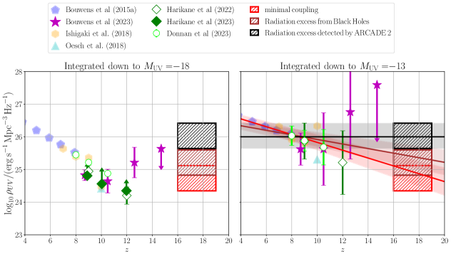
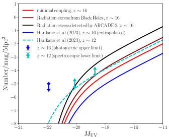
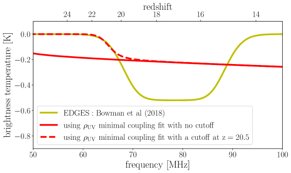

قيود JWST على كثافة اللمعان فوق البنفسجي عند الفجر الكوني: دلالاتها لعلم كونيات 21 سم
الملخص
بدأت مجموعة غير مسبوقة من القدرات الرصدية الجديدة تتيح قيودًا أساسية على نماذج حقبة الضوء الأول في الكون. نناقش في هذه الرسالة دلالات خلفية الإشعاع فوق البنفسجي عند الفجر الكوني، كما استُدل عليها من أرصاد JWST الحديثة، بالنسبة إلى التجارب الراديوية الهادفة إلى كشف الانتقال فائق الدقة للهيدروجين المحايد المنتشر عند 21 سم بعد انزياحه نحو الأحمر. وبموجب الفرضية الأساسية القائلة إن إشارة 21 سم تُفعَّل بواسطة حقل فوتونات Ly الذي تنتجه أنظمة نجمية فقيرة بالمعادن، نبيّن أن الكشف عند الترددات المنخفضة لتجربتي EDGES وSARAS3 قد يكون متوقعًا من استقراء بسيط للتناقص في كثافة اللمعان فوق البنفسجي المستنتجة عند من بيانات المجرات المبكرة لـ JWST. وتشير مراعاة فائض إشعاعي مبكر فوق CMB إلى تطور أضحل أو مسطح لإعادة إنتاج قيود كثافة اللمعان فوق البنفسجي الحالية عند القيم المنخفضة والعالية لـ في آن واحد، وهو ما لا يمكن استبعاده كليًا في ضوء اللايقينات الكبيرة الناجمة عن التباين الكوني وميل الطرف الخافت لدالة لمعان المجرات عند الفجر الكوني. تثير نتائجنا احتمالًا لافتًا هو أن كفاءة عالية لتكوّن النجوم في الأزمنة المبكرة قد تطلق بدء انبعاث Ly شديد عند الانزياح الأحمر وتنتج إشارة امتصاص كونية عند 21 سم بعد 200 Myr من الانفجار العظيم.
1 مقدمة
يوجد عدد من المرافق الرصدية التي تستكشف حاليًا، أو ستستكشف قريبًا، حقبة الفجر الكوني ()، حين يُتوقع أن تكون النجوم والمجرات الأولى قد تشكلت. ومن المنتظر أن تضع نتائج هذه المرافق قيودًا مهمة على أول المصادر الفيزيائية الفلكية للإشعاع، بما في ذلك كثافتها العددية، وانبعاثيتها المؤينة، فضلًا عن فيزياء تشكلها.
يعد تلسكوب James Webb الفضائي (JWST) المرصد الرائد الحالي العامل في الأشعة تحت الحمراء من الفضاء، وقد صُمم تحديدًا لاستكشاف حقبة الضوء الأول باعتبار ذلك أحد أهدافه العلمية الرئيسية (Robertson, 2022). ومن أوائل النتائج المثيرة من بيانات JWST المبكرة الاكتشافُ المحتمل لمجرات عند انزياحات حمراء عالية جدًا في تصوير NIRCam (مثلًا Adams et al., 2022; Atek et al., 2023; Bradley et al., 2022; Castellano et al., 2022b, a; Donnan et al., 2022, 2023b; Finkelstein et al., 2022, 2023; Harikane et al., 2022a; Morishita and Stiavelli, 2023; Naidu et al., 2022b; Pérez-González et al., 2023; Yan et al., 2023). فهذه المجرات لا تقع عند انزياحات حمراء أعلى بكثير من أي مجرة اكتشفها سابقًا تلسكوب Hubble الفضائي (HST) فحسب، بل إنها أيضًا ساطعة على نحو مفاجئ. وتكافح نماذج تشكل المجرات كلها تقريبًا لإعادة إنتاج الكثافات العددية لهذه الأنظمة المبكرة الساطعة (Finkelstein et al., 2023). وبالإضافة إلى ذلك، يحصل كثير من المؤلفين، بعد إجراء ملاءمة SED للتدفقات المقاسة، على كتل نجمية عالية (Donnan et al., 2022; Harikane et al., 2022b; Labbe et al., 2022) قد تكون في توتر مع الفيزياء الفلكية لتشكل المجرات المبكر (Boylan-Kolchin, 2022; Lovell et al., 2023) (لكن انظر McCaffrey et al. 2023; Prada et al. 2023; Yung et al. 2023 من أجل تفسير مختلف). وبالنظر إلى هذه التحديات، قد يكون من المهم البحث عن قياسات مستقلة لمجتمع المصادر في الحقب المبكرة جدًا.


يُتوقع أن يُظهر طيف الخلفية الكونية الميكروية (CMB) سمة امتصاص عند ترددات دون 150 MHz، انطبعت عندما كان الكون مغمورًا بفوتونات Ly المنبعثة من أوائل النجوم وقبل أن يُعاد تسخينه وتأيينه (Madau et al., 1997; Tozzi et al., 2000). ويحمل عمق إشارة 21 سم الشاملة وتوقيتها (ترددها) قدرًا كبيرًا من المعلومات عن طبيعة المصادر الأولى والحالة الحرارية للوسط بين المجرات (IGM)، ويمكنهما تقييد فيزياء الكون المبكر جدًا. وقد أعلن فريق تجربة كشف البصمة الكونية الشاملة لعصر إعادة التأين (EDGES) عن كشف مثير للجدل (Bowman et al., 2018) لمظهر امتصاص مسطح في الطيف الراديوي المتوسط على السماء، يتمركز عند 78 MHz وبسعة شاذة قدرها 0.5 K، واضعًا ميلاد أول المصادر الفيزيائية الفلكية عند .
إن أخدود امتصاص عميقًا كهذا يقتضي فيزياء غرائبية جديدة أثناء الفجر الكوني، مثل تفاعل ما بين المادة المظلمة والباريونات (انظر مثلًا، Barkana, 2018; Muñoz et al., 2018; Slatyer and Wu, 2018)، أو فائضًا في الخلفية الراديوية (مثلًا، Fraser et al., 2018; Pospelov et al., 2018; Feng and Holder, 2018; Ewall-Wice et al., 2018; Fialkov and Barkana, 2019; Ewall-Wice et al., 2020). وقد قيل أيضًا (انظر مثلًا، Hills et al., 2018; Bradley et al., 2019; Singh and Subrahmanyan, 2019; Sims and Pober, 2020) إن إشارة EDGES قد لا تكون ذات أصل فيزيائي فلكي، ويؤكد عدم الكشف الأخير من تجربة SARAS3 (Singh et al., 2022) المخاوف السابقة.
على الرغم من أن نتائج JWST المستندة إلى أرصاد NIRCam المبكرة في هذا النطاق المتطرف من الانزياح الأحمر، وكذلك طبيعة إشارة الامتصاص الراديوية، كلتيهما شديدتا اللايقين، فإن من المهم مناقشة دلالات خلفية إشعاع فوق بنفسجي ساطعة عند الفجر الكوني لعلم كونيات 21 سم. نحاول في هذه الرسالة الإجابة عن السؤال الآتي: هل تستطيع المجرات الفتية التي كشفها JWST عند أعلى الانزياحات الحمراء أن توفر ما يكفي من إشعاع Ly لخلط المستويات فائقة الدقة للهيدروجين المحايد وإنتاج إشارة شاملة عند 21 سم عند الانزياحات الحمراء، ، التي تستكشفها تجربتا EDGES وSARAS3؟ ونؤكد أنه، كما في Madau (2018)، يركز تحليلنا على توقيت هذه الإشارة وعلى القيود التي تفرضها شدة اقتران Wouthuysen–Field المطلوبة على خلفية الإشعاع فوق البنفسجي عند الضوء الأول، وفي وجود مستويات مختلفة من الخلفية الراديوية (Feng and Holder, 2018; Ewall-Wice et al., 2018). ولا يحاول تحليلنا تفسير أخدود الامتصاص الذي ادعته EDGES أو دحضه.
2 كثافة اللمعان فوق البنفسجي عند الانزياح الأحمر العالي
يوضح الشكل 1 تقديرات كثافة اللمعان فوق البنفسجي، ، من HST (Oesch et al., 2018; Ishigaki et al., 2018; Bouwens et al., 2015)، وJWST/NIRCam11 1 نهمل النتائج عند المستندة إلى مجرة مرشحة واحدة تأكد مؤخرًا طيفيًا أنها تقع عند انزياح أحمر أدنى (Naidu et al., 2022a; Zavala et al., 2023; Arrabal Haro et al., 2023). (Donnan et al., 2023a; Harikane et al., 2022a; Bouwens et al., 2022b) وJWST/NIRSpec (Harikane et al., 2023)، كما هي مذكورة في مفتاح الشكل لحدود قطع مختلفة عند الطرف الخافت للمقدار قدرها (اللوحة اليسرى) و (اللوحة اليمنى)22 2 نستقرئ فقط نزولًا إلى لأن معظم دوال اللمعان فوق البنفسجي (LFs) المعاد بناؤها من القياسات والنظرية لا تُظهر قطعًا عند مقادير أسطع من هذا الحد (انظر مثلًا Bouwens et al., 2022a).. وقد حصلنا على كل القيم بتكامل LF المرصودة نزولًا إلى حد القطع. وبما أن ميل الطرف الخافت في هذه الحقب المبكرة غير مقيد بشدة، وأن دوال اللمعان فوق البنفسجي المقاسة هذه تُستحصل عند قيمة ثابتة لـ ، نفترض مستوى من اللايقين مستلهمًا من Bouwens et al. (2022a)، حيث تبين أن الأخطاء في تتطور من 1-2% عند إلى 4-7% عند . ومن ثم نفترض، على نحو محافظ، خطأ قدره 5% و10% في ميل الطرف الخافت لـ LF الخاصة بالمجرات عند و، على التوالي، ونضيف هذه اللايقينات إلى بيانات JWST فقط.
في الشكل نرسم أيضًا كثافة اللمعان فوق البنفسجي المطلوبة لإنتاج سمة عند 21 سم عند في نظام ‘الاقتران الأدنى’ (Madau, 2018, الصندوق الأحمر). ويُفرض هذا القيد على تدفق خلفية Ly بواسطة آلية Wouthuysen–Field التي تمزج المستويات فائقة الدقة للهيدروجين المحايد، وهي أساسية لقابلية كشف إشارة راديوية عند 21 سم من حقبة الضوء الأول (Madau et al., 1997). وينتج عن ذلك لثابت تناسب () يربط الكثافة العددية لفوتونات Ly بالانبعاثية المؤينة (انظر المعادلة 10 والنص المصاحب في Madau 2018 لمزيد من التفاصيل). وفي Madau (2018)، قُدمت دالة ملاءمة، لحد قطع في المقدار ، لوصف تطور تدريجي مع الانزياح الأحمر متسق مع أرصاد HST العميقة عند 4 9 وكذلك مع نظام الاقتران الأدنى عند 21 سم. وبما أن بيانات JWST لم تُدرج في الصيغة الدالية لدى Madau (2018)، فقد أعدنا الملاءمة لكل البيانات بما في ذلك HST وJWST وآلية Wouthuysen–Field (الصندوق الأحمر). وتظهر دالة الملاءمة المحدّثة، ، واللايقين المرتبط بها عند مستوى 1- في الشكل بالخط الأحمر المتصل والحزمة المظللة.
إضافة إلى نظام الاقتران الأدنى لإشارة 21 سم، ندرس القيود نفسها في وجود مستويات مختلفة من خلفية راديوية إضافية (فوق CMB) ذات درجة حرارة سطوع . وبما أن درجة حرارة سطوع إشارة 21 سم تتناسب كما يلي
| (1) |
حيث إن هي درجة حرارة اللف المغزلي للهيدروجين، فيمكن زيادة سعة إشارة الامتصاص بزيادة ، مما يؤدي إلى تعزيز مضاعف لإشارة الامتصاص المعيارية بالعامل في حد . سننظر أولًا في فائض إشعاعي بفعل التراكم على الثقوب السوداء المبكرة كما اقترح Ewall-Wice et al. (2018)، حيث وُجد أن عامل تعزيز قدره (الموافق لوجود 1% من كتلة الثقوب السوداء في الزمن الحاضر عند ) يعيد إنتاج سعة كشف EDGES. ويزيد ذلك قيود اقتران Ly على بالعامل نفسه، كما يوضحه الصندوق البني. وفي هذا السيناريو، تكون كثافة اللمعان فوق البنفسجي الأفضل ملاءمة، ، ذات تطور أضحل بكثير مع الانزياح الأحمر. ثانيًا، ننظر في فائض الإشعاع القوي الذي كشفه المقياس الإشعاعي المطلق لعلم الكونيات والفيزياء الفلكية والانبعاث المنتشر (ARCADE 2)، وهو متسق مع CMB عند الترددات العالية وأعلى منه بكثير عند الترددات المنخفضة (Fixsen et al., 2011). وباتباع دالة الملاءمة التي قدمها Feng and Holder (2018)، نجد عامل تعزيز قدره ، مما يؤدي إلى زيادة مقابلة في قيد الاقتران على (الصندوق الأسود في الشكل). إن كثافة اللمعان فوق البنفسجي المعززة هذه قابلة للمقارنة مع التقديرات الموجودة عند ، ومن شأن تطور مسطح لـ أن يعيد إنتاج القيود عند قيم z المنخفضة والعالية في هذه الحالة. وهذه الحالة المتطرفة لتطور مسطح في غير مرجحة بينما يتطور الكون من إلى . ومع ذلك نعرض هذه الحالة المتطرفة لوضع حد أعلى للتطور الضحل المتوقع مع الانزياح الأحمر في وجود فائض إشعاعي.
بصرف النظر عن حد القطع في المقدار، نجد اتساقًا عامًا بين القياسات المبكرة والأحدث لكثافة اللمعان فوق البنفسجي بواسطة HST وJWST. وعند الحد (اللوحة اليسرى في الشكل 1)، تشير بيانات HST وJWST إلى تناقص سريع في باتجاه الحقب المبكرة، وهو متسق مع المتطورة المتوقعة في نماذج كفاءة تكوّن نجمي ثابتة (Harikane et al., 2023)، لكنه غير متسق مع القيود التي تفرضها إشارة محتملة عند 21 سم متمركزة عند الانزياح الأحمر . أما عند الاستقراء إلى مقادير أخفت والتكامل نزولًا إلى ، فنجد بدلًا من ذلك أن القياسات تقترح تطورًا ألطف في . وهذا يشير إلى أن قيود JWST عند الانزياح الأحمر العالي في نطاق الانزياحات وإشارة عند 21 سم في نظام الاقتران الأدنى عند قد تكون جميعها متسقة مع استقراء لكثافة اللمعان فوق البنفسجي المتناقصة للمجرات المقاسة عند بواسطة HST. ويلزم تناقص أكثر ضحالة في في وجود فائض في الخلفية الراديوية صادر عن ثقوب سوداء أو كما كشفه ARCADE 2. وعلى الرغم من أن اللايقينات لا تزال كبيرة جدًا بحيث لا تسمح باستبعاد أي من هذه السيناريوهات، فإن الشكل 1 يوضح قدرة أرصاد JWST المستقبلية على وضع قيود مستقلة على فيزياء فلكية غرائبية خلال حقبة الضوء الأول.
| Minimal 21-cm coupling (Madau, 2018) | ||
|---|---|---|
| Radiation excess from black holes (Ewall-Wice et al., 2018) | ||
| Radiation excess by ARCADE 2 (Feng and Holder, 2018) |
3 دالة اللمعان فوق البنفسجي عند الانزياح الأحمر 16
قد يكون من المفيد في هذه المرحلة فهم أي تطبيع كلي لدالة اللمعان فوق البنفسجي للمجرات سيكون مطلوبًا لإنتاج سمة عند 21 سم عند في وجود فوائض مختلفة في الخلفية الراديوية. وباستخدام قيود الاقتران الأدنى لدى Madau (2018)، ومع تثبيت معاملي Schechter لدالة اللمعان، و (من الملاءمات التي قدمها Harikane et al. 2023)، نشتق عند التطبيع . وبتكرار الإجراء نفسه من أجل المعززة المرتبطة بفوائض الخلفية الراديوية الناتجة عن الثقوب السوداء المبكرة (Ewall-Wice et al., 2018) وعن ARCADE 2 (Feng and Holder, 2018)، نحصل على و، على التوالي. ويقدم الجدول 1 ملخصًا لهذه القيود.
تقع LF الأفضل ملاءمة في نظام الاقتران الأدنى، والمبينة بالخط الأحمر المتصل في الشكل 2، دون LF عند التي حسبها Harikane et al. (2023) من مرشحين مؤكدين طيفيًا، وكذلك دون الحد الأعلى عند (Harikane et al., 2023). غير أن لهذه الملاءمة تطبيعًا أعلى عند مقارنتها باستقراء إلى لمعاملات دالة Schechter المقدمة في Harikane et al. (2023). تتمتع LF المعززة في سيناريو فائض إشعاع الثقوب السوداء عند (الخط البني) بسعة/ميل مشابهين تقريبًا لـ LF المقاسة طيفيًا عند لدى Harikane et al. (2023) عند الطرف الخافت، لكنها تنخفض بسرعة أكبر عند الطرف الساطع (قارن مع ). ولا تزال هذه الملاءمة تقع دون الحد الأعلى الفوتومتري . ويمثل المنحنى الأسود في الشكل 2 تنبؤنا لـ LF الخاصة بسيناريو فائض إشعاع ARCADE 2، وهي أعلى بنحو مرتبة قدرية واحدة من LF المقاسة عند . وبما أن الأخيرة شُيدت باستخدام حدود دنيا فقط، فلا يمكن استبعاد LF معززة بهذا القدر عند استبعادًا كاملًا. ومن المتوقع أن تستكشف مسوح JWST العميقة المستقبلية كون على نحو أفضل (Wilkins et al., 2023)، وقد توفر اختبارًا حاسمًا لهذه التنبؤات.

4 إشارة 21 سم
في القسم السابق، بيّنا كيف يمكن لبيانات JWST أن تقيد وجود إشارة عند 21 سم في انزياحات حمراء قصوى. ونقدم هنا مناقشة أولية للعوامل القليلة التي قد تؤثر في هذه السمة. نستخدم سيناريو الاقتران الأدنى الافتراضي لدينا (انظر Madau 2018 والشكل 1) لتطور كثافة اللمعان فوق البنفسجي من أجل حساب درجة حرارة السطوع المتوقعة عند 21 سم في غياب التسخين بالأشعة السينية والفائض الراديوي. يقارن الشكل 3 مظهر الامتصاص الذي ادعته EDGES بتنبؤات من نموذج معياري مع قطع في كثافة اللمعان فوق البنفسجي عند (المنحنى الأحمر المتقطع) ومن دون هذا القطع (المنحنى الأحمر المتصل). ويوضح كيف أن أخدود الامتصاص الذي أبلغ عنه تعاون EDGES أقوى بعدة مرات مما تتنبأ به النماذج الفيزيائية الفلكية التقليدية، كما يوضح أثر وجود قطع في على بدء الإشارة الشاملة. وكما ذُكر في المقدمة، عارضت تجربة SARAS3 (Singh et al., 2022) كشف EDGES. وفي إطار سيناريو الاقتران الأدنى لدينا، قد يفسَّر عدم كشف SARAS بإشارة الامتصاص الأضحل التي يتنبأ بها المنحنى الأحمر المتصل في الشكل، حيث إن وجود مصادر Ly عند انزياحات حمراء أعلى من 20 ينقل بدء امتصاص 21 سم إلى ترددات أدنى حتى. وبدلًا من ذلك، قد تسخن انبعاثات الأشعة السينية من الجيل الأول من المصادر الفيزيائية الفلكية الغاز بين المجرات فوق درجة حرارة CMB، منتجةً في هذه الحقب إشارة خافتة عند 21 سم في الانبعاث. وتشمل التعقيدات في تقييم أثر التسخين المبكر بالأشعة السينية على قابلية كشف امتصاص 21 سم دور AGNs، ووفرة ثنائيات الأشعة السينية المبكرة، وشكل SED للأشعة السينية في الحزمة اللينة (مثلًا، Mesinger et al., 2011; Fialkov et al., 2014; Madau and Fragos, 2017). ونرجئ النمذجة التفصيلية لسيناريوهات التسخين بالأشعة السينية والفائض الراديوي إلى ورقة مستقبلية.
5 الخلاصة
توفر حقبة الضوء الأول نافذة فريدة على أوائل المصادر الفيزيائية الفلكية للإشعاع وعلى أثرها في IGM. في هذا العمل، ركزنا على احتمال أن تؤدي كفاءة عالية لتكوّن النجوم في الأزمنة المبكرة – كما توحي نتائج JWST المبكرة – إلى إطلاق بدء انبعاث Ly شديد عند الانزياح الأحمر وإنتاج إشارة امتصاص كونية عند 21 سم بعد 200 Myr من الانفجار العظيم. وقد بيّنا أن إشارة راديوية عند الترددات التي تستكشفها تجربتا EDGES وSARAS قد تكون متوقعة عند استقراء كثافة اللمعان فوق البنفسجي المتطورة للمجرات المقاسة عند 4 بواسطة أرصاد HST وJWST العميقة. وإذا كُمّلت LF فوق البنفسجية التي قاسها JWST نزولًا إلى ، فإن كل البيانات الرصدية تشير إلى تطور معتدل ومستقر لـ ، مولدًا عند ما يكفي من فوتونات Ly لإنتاج إشارة شاملة عند 21 سم عبر تأثير Wouthuysen–Field. وقد يظل تطور ألطف لـ ، كما تتطلبه النماذج الغرائبية ذات فائض خلفية راديوية فوق CMB في الحقب المبكرة، متسقًا مع بيانات JWST الحالية بالنظر إلى اللايقينات الكبيرة المرتبطة بالتباين الكوني وميل الطرف الخافت لـ LF الخاصة بالمجرات. وباستخدام نموذج شبه تحليلي لإعادة التأين، أظهر Bera et al. (2022) مؤخرًا أن كثافة لمعان كهذه، ذات تطور معتدل، تتطلب مساهمة أعلى بكثير من المجرات الخافتة، لأن المجرات الضخمة عند العالية نادرة.
نلاحظ أن استخدام كفاءة تكوّن نجمي ثابتة مرتبطة بدالة كتلة الهالات التي يتنبأ بها CDM سيؤدي إلى هبوط كبير في كثافة اللمعان فوق البنفسجي بعد ، وهو انخفاض غير مرصود في الواقع (Sun and Furlanetto, 2016; Harikane et al., 2018, 2023; Mason et al., 2018, 2023). وقد تتطلب كثافة اللمعان فوق البنفسجي العالية المستنتجة في الأزمنة المبكرة مراجعةً للفيزياء الفلكية القياسية لتشكل المجرات المبكر (Lovell et al., 2023; Mason et al., 2023; Dekel et al., 2023)، بما في ذلك أثر الغبار (Ferrara et al., 2022; Nath et al., 2023)، أو دالة كتلة ابتدائية منحازة نحو الكتل الكبيرة أو كسر مرتفع من AGN (Inayoshi et al., 2022; Harikane et al., 2022b; Yung et al., 2023)، أو مصادر غرائبية مثل الثقوب السوداء البدائية أو نجوم Population III (Liu and Bromm, 2022; Wang et al., 2022; Hütsi et al., 2023; Yuan et al., 2023; Mittal and Kulkarni, 2022)، أو تعديلات على النموذج الكوني (Haslbauer et al., 2022; Menci et al., 2022; Maio and Viel, 2023; Biagetti et al., 2023; Dayal and Giri, 2023; Melia, 2023).
أثناء إعداد هذه الرسالة، ناقش Meiksin (2023) على نحو مستقل كيف يمكن أن توحي بيانات JWST الجديدة بوجود ما يكفي من فوتونات خلفية Ly لفصل درجة حرارة اللف المغزلي عن درجة حرارة CMB بحلول الانزياح الأحمر 14. وفي عملنا، ركزنا على مجال الانزياح الأحمر حيث تكون تجارب 21 سم مثل EDGES و SARAS حساسة.
6 الشكر والتقدير
يقر المؤلفون بفضل المحكم المجهول على الملاحظات والاقتراحات البنّاءة التي حسّنت الورقة كثيرًا، ويشكرون Adam Lidz وMartin Rey وIngyin Zaw وAndrea Macciò وAnthony Pullen وPatrick Breysse على النقاشات المفيدة. يقر SH بالدعم المقدم للبرنامج رقم HST-HF2-51507 من NASA عبر منحة من Space Telescope Science Institute، الذي تديره Association of Universities for Research in Astronomy, incorporated، بموجب عقد NASA رقم NAS5-26555. ويقر CCL بالدعم من زمالة Dennis Sciama الممولة من University of Portsmouth لصالح Institute of Cosmology and Gravitation. ويقر PM بالدعم من منحة NASA TCAN رقم 80NSSC21K0271 وبضيافة New York University Abu Dhabi أثناء إنجاز هذا العمل. دُعم هذا البحث جزئيًا من National Science Foundation بموجب المنحة رقم NSF PHY-1748958. وأُنجز جزء من هذا العمل أثناء ورشة KITP GALEVO23 لعلم الفلك المعتمد على البيانات.
References
- Discovery and properties of ultra-high redshift galaxies ($9<z<12$) in the JWST ERO SMACS 0723 Field. arXiv:2207.11217. External Links: Link, Document Cited by: §1.
- Spectroscopic verification of very luminous galaxy candidates in the early universe. Technical report Note: Publication Title: arXiv e-prints ADS Bibcode: 2023arXiv230315431A Type: article External Links: Link, Document Cited by: footnote 1.
- Revealing galaxy candidates out to z 16 with JWST observations of the lensing cluster SMACS0723. MNRAS 519, pp. 1201–1220. Note: ADS Bibcode: 2023MNRAS.519.1201A External Links: ISSN 0035-8711, Link, Document Cited by: §1.
- Possible interaction between baryons and dark-matter particles revealed by the first stars. Nature 555 (7694), pp. 71–74. External Links: Document, 1803.06698 Cited by: §1.
- Bridging the Gap between Cosmic Dawn and Reionization favors Faint Galaxies-dominated Models. arXiv e-prints, pp. arXiv:2209.14312. External Links: Document, 2209.14312 Cited by: §5.
- High-redshift JWST Observations and Primordial Non-Gaussianity. ApJ 944, pp. 113. Note: ADS Bibcode: 2023ApJ…944..113B External Links: ISSN 0004-637X, Link, Document Cited by: §5.
- UV Luminosity Functions at Redshifts z 4 to z 10: 10,000 Galaxies from HST Legacy Fields. ApJ 803 (1), pp. 34. External Links: Document, 1403.4295 Cited by: Figure 1, §2.
- z 2-9 Galaxies Magnified by the Hubble Frontier Field Clusters. II. Luminosity Functions and Constraints on a Faint-end Turnover. ApJ 940 (1), pp. 55. External Links: Document, 2205.11526 Cited by: §2, footnote 2.
- Evolution of the UV LF from z~15 to z~8 Using New JWST NIRCam Medium-Band Observations over the HUDF/XDF. arXiv e-prints, pp. arXiv:2211.02607. External Links: Document, 2211.02607 Cited by: Figure 1, §2.
- An absorption profile centred at 78 megahertz in the sky-averaged spectrum. Nature 555 (7694), pp. 67–70. External Links: Document, 1810.05912 Cited by: §1.
- Stress Testing $\Lambda$CDM with High-redshift Galaxy Candidates. arXiv:2208.01611. External Links: Link, Document Cited by: §1.
- High-Redshift Galaxy Candidates at $z = 9-13$ as Revealed by JWST Observations of WHL0137-08. Technical report Note: Publication Title: arXiv e-prints ADS Bibcode: 2022arXiv221001777B Type: article External Links: Link, Document Cited by: §1.
- A Ground Plane Artifact that Induces an Absorption Profile in Averaged Spectra from Global 21 cm Measurements, with Possible Application to EDGES. ApJ 874 (2), pp. 153. External Links: Document, 1810.09015 Cited by: §1.
- A High Density of Bright Galaxies at $z\approx10$ in the A2744 region. Technical report Note: Publication Title: arXiv e-prints ADS Bibcode: 2022arXiv221206666C Type: article External Links: Link Cited by: §1.
- Early Results from GLASS-JWST. III. Galaxy Candidates at z 9-15. The Astrophysical Journal 938, pp. L15. Note: ADS Bibcode: 2022ApJ…938L..15C External Links: ISSN 0004-637X, Link, Document Cited by: §1.
- Warm dark matter constraints from the JWST. Technical report Note: Publication Title: arXiv e-prints ADS Bibcode: 2023arXiv230314239D Type: article External Links: Link, Document Cited by: §5.
- Efficient Formation of Massive Galaxies at Cosmic Dawn by Feedback-Free Starbursts. Technical report Note: Publication Title: arXiv e-prints ADS Bibcode: 2023arXiv230304827D Type: article External Links: Link, Document Cited by: §5.
- The evolution of the galaxy UV luminosity function at redshifts z ≃ 8 - 15 from deep JWST and ground-based near-infrared imaging. MNRAS 518 (4), pp. 6011–6040. External Links: Document, 2207.12356 Cited by: Figure 1, §2.
- The evolution of the galaxy UV luminosity function at redshifts z ~ 8-15 from deep JWST and ground-based near-infrared imaging. arXiv:2207.12356. External Links: Link, Document Cited by: §1.
- The abundance of z ≳ 10 galaxy candidates in the HUDF using deep JWST NIRCam medium-band imaging. MNRAS 520, pp. 4554–4561. Note: ADS Bibcode: 2023MNRAS.520.4554D External Links: ISSN 0035-8711, Link, Document Cited by: §1.
- Modeling the Radio Background from the First Black Holes at Cosmic Dawn: Implications for the 21 cm Absorption Amplitude. ApJ 868 (1), pp. 63. External Links: Document, 1803.01815 Cited by: Figure 1, Figure 2, §1, §1, Table 1, §2, §3.
- The Radio Scream from black holes at Cosmic Dawn: a semi-analytic model for the impact of radio-loud black holes on the 21 cm global signal. MNRAS 492 (4), pp. 6086–6104. External Links: Document, 1903.06788 Cited by: §1.
- Enhanced Global Signal of Neutral Hydrogen Due to Excess Radiation at Cosmic Dawn. ApJ 858 (2), pp. L17. External Links: Document, 1802.07432 Cited by: Figure 1, Figure 2, §1, §1, Table 1, §2, §3.
- On the stunning abundance of super-early, massive galaxies revealed by JWST. Technical report Note: Publication Title: arXiv e-prints ADS Bibcode: 2022arXiv220800720F Type: article External Links: Link Cited by: §5.
- The observable signature of late heating of the Universe during cosmic reionization. Nature 506 (7487), pp. 197–199. External Links: Document, 1402.0940 Cited by: §4.
- Signature of excess radio background in the 21-cm global signal and power spectrum. MNRAS 486 (2), pp. 1763–1773. External Links: Document, 1902.02438 Cited by: §1.
- CEERS Key Paper. I. An Early Look into the First 500 Myr of Galaxy Formation with JWST. ApJL 946 (1), pp. L13 (en). Note: Publisher: The American Astronomical Society External Links: ISSN 2041-8205, Link, Document Cited by: §1.
- A Long Time Ago in a Galaxy Far, Far Away: A Candidate z ∼ 12 Galaxy in Early JWST CEERS Imaging. ApJL 940 (2), pp. L55 (en). Note: Publisher: The American Astronomical Society External Links: ISSN 2041-8205, Link, Document Cited by: §1.
- ARCADE 2 Measurement of the Absolute Sky Brightness at 3-90 GHz. ApJ 734 (1), pp. 5. External Links: Document, 0901.0555 Cited by: §2.
- The EDGES 21 cm anomaly and properties of dark matter. Physics Letters B 785, pp. 159–164. External Links: Document, 1803.03245 Cited by: §1.
- A Search for H-Dropout Lyman Break Galaxies at z 12-16. ApJ 929 (1), pp. 1. External Links: Document, 2112.09141 Cited by: Figure 1, §1, §2.
- Pure Spectroscopic Constraints on UV Luminosity Functions and Cosmic Star Formation History From 25 Galaxies at Confirmed with JWST/NIRSpec. arXiv e-prints, pp. arXiv:2304.06658. External Links: Document, 2304.06658 Cited by: Figure 1, Figure 2, §2, §2, §3, §3, §5.
- A Comprehensive Study on Galaxies at z~9-17 Found in the Early JWST Data: UV Luminosity Functions and Cosmic Star-Formation History at the Pre-Reionization Epoch. arXiv:2208.01612. External Links: Link, Document Cited by: §1, §5.
- GOLDRUSH. II. Clustering of galaxies at z ∼ 4-6 revealed with the half-million dropouts over the 100 deg2 area corresponding to 1 Gpc3. PASJ 70, pp. S11. Note: ADS Bibcode: 2018PASJ…70S..11H External Links: ISSN 0004-6264, Link, Document Cited by: §5.
- Has JWST Already Falsified Dark-matter-driven Galaxy Formation?. ApJ 939, pp. L31. Note: ADS Bibcode: 2022ApJ…939L..31H External Links: ISSN 0004-637X, Link, Document Cited by: §5.
- Concerns about modelling of the EDGES data. Nature 564 (7736), pp. E32–E34. External Links: Document, 1805.01421 Cited by: §1.
- Did JWST observe imprints of axion miniclusters or primordial black holes?. Phys. Rev. D 107, pp. 043502. Note: ADS Bibcode: 2023PhRvD.107d3502H External Links: ISSN 1550-79980556-2821, Link, Document Cited by: §5.
- A Lower Bound of Star Formation Activity in Ultra-high-redshift Galaxies Detected with JWST: Implications for Stellar Populations and Radiation Sources. ApJ 938, pp. L10. Note: ADS Bibcode: 2022ApJ…938L..10I External Links: ISSN 0004-637X, Link, Document Cited by: §5.
- Full-data Results of Hubble Frontier Fields: UV Luminosity Functions at z 6-10 and a Consistent Picture of Cosmic Reionization. ApJ 854 (1), pp. 73. External Links: Document, 1702.04867 Cited by: Figure 1, §2.
- A very early onset of massive galaxy formation. arXiv:2207.12446. External Links: Link, Document Cited by: §1.
- Accelerating Early Massive Galaxy Formation with Primordial Black Holes. ApJ 937, pp. L30. Note: ADS Bibcode: 2022ApJ…937L..30L External Links: ISSN 0004-637X, Link, Document Cited by: §5.
- Extreme value statistics of the halo and stellar mass distributions at high redshift: are JWST results in tension with λCDM?. MNRAS 518, pp. 2511–2520. Note: ADS Bibcode: 2023MNRAS.518.2511L External Links: ISSN 0035-8711, Link, Document Cited by: §1, §5.
- Radiation Backgrounds at Cosmic Dawn: X-Rays from Compact Binaries. ApJ 840 (1), pp. 39. External Links: Document, 1606.07887 Cited by: §4.
- 21 Centimeter Tomography of the Intergalactic Medium at High Redshift. ApJ 475 (2), pp. 429–444. External Links: Document, astro-ph/9608010 Cited by: §1, §2.
- Constraints on early star formation from the 21-cm global signal. MNRAS 480 (1), pp. L43–L47. External Links: Document, 1807.01316 Cited by: Figure 1, Figure 2, §1, Table 1, §2, §3, §4.
- JWST high-redshift galaxy constraints on warm and cold dark matter models. A&A 672, pp. A71. Note: ADS Bibcode: 2023A&A…672A..71M External Links: ISSN 0004-6361, Link, Document Cited by: §5.
- The brightest galaxies at cosmic dawn. MNRAS 521, pp. 497–503. Note: ADS Bibcode: 2023MNRAS.521..497M External Links: ISSN 0035-8711, Link, Document Cited by: §5.
- The universe is reionizing atiz/i 7: bayesian inference of the IGM neutral fraction using lyi/iemission from galaxies. The Astrophysical Journal 856 (1), pp. 2. External Links: Document, Link Cited by: §5.
- No Tension: JWST Galaxies at Consistent with Cosmological Simulations. arXiv e-prints, pp. arXiv:2304.13755. External Links: Document, 2304.13755 Cited by: §1.
- Observational constraints on the metagalactic Ly photon scattering rate at high redshift. arXiv e-prints, pp. arXiv:2304.07085. External Links: 2304.07085 Cited by: §5.
- The cosmic timeline implied by the JWST high-redshift galaxies. MNRAS: Letters 521, pp. L85–L89. Note: ADS Bibcode: 2023MNRAS.521L..85M External Links: ISSN 0035-8711, Link, Document Cited by: §5.
- High-redshift Galaxies from Early JWST Observations: Constraints on Dark Energy Models. ApJ 938, pp. L5. Note: ADS Bibcode: 2022ApJ…938L…5M External Links: ISSN 0004-637X, Link, Document Cited by: §5.
- 21CMFAST: a fast, seminumerical simulation of the high-redshift 21-cm signal. MNRAS 411 (2), pp. 955–972. External Links: Document, 1003.3878 Cited by: §4.
- Implications of the cosmological 21-cm absorption profile for high-redshift star formation and deep JWST surveys. MNRAS 515 (2), pp. 2901–2913. External Links: Document, 2203.07733 Cited by: §5.
- Physical Characterization of Early Galaxies in the Webb’s First Deep Field SMACS J0723.3-7323. ApJ 946, pp. L35. Note: ADS Bibcode: 2023ApJ…946L..35M External Links: ISSN 0004-637X, Link, Document Cited by: §1.
- 21-cm Fluctuations from Charged Dark Matter. Phys. Rev. Lett. 121 (12), pp. 121301. External Links: Document, 1804.01092 Cited by: §1.
- Schrodinger’s Galaxy Candidate: Puzzlingly Luminous at $z\approx17$, or Dusty/Quenched at $z\approx5$?. arXiv:2208.02794. External Links: Link, Document Cited by: footnote 1.
- Two Remarkably Luminous Galaxy Candidates at $z\approx11-13$ Revealed by JWST. arXiv:2207.09434. External Links: Link, Document Cited by: §1.
- Dust-free starburst galaxies at redshifts z > 10. MNRAS 521, pp. 662–667. Note: ADS Bibcode: 2023MNRAS.521..662N External Links: ISSN 0035-8711, Link, Document Cited by: §5.
- The Dearth of z 10 Galaxies in All HST Legacy Fields—The Rapid Evolution of the Galaxy Population in the First 500 Myr. ApJ 855 (2), pp. 105. External Links: Document, 1710.11131 Cited by: Figure 1, §2.
- Life beyond 30: probing the -20. Technical report Note: Publication Title: arXiv e-prints ADS Bibcode: 2023arXiv230202429P Type: article External Links: Link Cited by: §1.
- Room for New Physics in the Rayleigh-Jeans Tail of the Cosmic Microwave Background. Phys. Rev. Lett. 121 (3), pp. 031103. External Links: Document, 1803.07048 Cited by: §1.
- Confirmation of the standard cosmological model from red massive galaxies Myr after the Big Bang. arXiv e-prints, pp. arXiv:2304.11911. External Links: Document, 2304.11911 Cited by: §1.
- Galaxy Formation and Reionization: Key Unknowns and Expected Breakthroughs by the James Webb Space Telescope. ARAA 60, pp. 121–158. Note: ADS Bibcode: 2022ARA&A..60..121R External Links: ISSN 0066-4146, Link, Document Cited by: §1.
- Testing for calibration systematics in the EDGES low-band data using Bayesian model selection. MNRAS 492 (1), pp. 22–38. External Links: Document, 1910.03165 Cited by: §1.
- On the detection of a cosmic dawn signal in the radio background. Nature Astronomy 6, pp. 607–617. External Links: Document, 2112.06778 Cited by: §1, §4.
- The Redshifted 21 cm Signal in the EDGES Low-band Spectrum. ApJ 880 (1), pp. 26. External Links: Document, 1903.04540 Cited by: §1.
- Early-Universe constraints on dark matter-baryon scattering and their implications for a global 21 cm signal. Phys. Rev. D 98 (2), pp. 023013. External Links: Document, 1803.09734 Cited by: §1.
- Constraints on the star formation efficiency of galaxies during the epoch of reionization. MNRAS 460, pp. 417–433. Note: ADS Bibcode: 2016MNRAS.460..417S External Links: ISSN 0035-8711, Link, Document Cited by: §5.
- Radio Signatures of H I at High Redshift: Mapping the End of the “Dark Ages”. ApJ 528 (2), pp. 597–606. External Links: Document, astro-ph/9903139 Cited by: §1.
- A strong He II $\lambda$1640 emitter with extremely blue UV spectral slope at $z=8.16$: presence of Pop III stars?. Technical report Note: Publication Title: arXiv e-prints ADS Bibcode: 2022arXiv221204476W Type: article External Links: Link Cited by: §5.
- First light and reionization epoch simulations (FLARES) V: the redshift frontier. MNRAS 519, pp. 3118–3128. Note: ADS Bibcode: 2023MNRAS.519.3118W External Links: ISSN 0035-8711, Link, Document Cited by: §3.
- First Batch of z ≈ 11-20 Candidate Objects Revealed by the James Webb Space Telescope Early Release Observations on SMACS 0723-73. ApJ 942, pp. L9. Note: ADS Bibcode: 2023ApJ…942L…9Y External Links: ISSN 0004-637X, Link, Document Cited by: §1.
- Rapidly growing primordial black holes as seeds of the massive high-redshift JWST Galaxies. arXiv. Note: arXiv:2303.09391 [astro-ph, physics:gr-qc] External Links: Link, Document Cited by: §5.
- Are the ultra-high-redshift galaxies at z ¿ 10 surprising in the context of standard galaxy formation models?. arXiv e-prints, pp. arXiv:2304.04348. External Links: Document, 2304.04348 Cited by: §1, §5.
- Dusty Starbursts Masquerading as Ultra-high Redshift Galaxies in JWST CEERS Observations. ApJ 943, pp. L9. Note: ADS Bibcode: 2023ApJ…943L…9Z External Links: ISSN 0004-637X, Link, Document Cited by: footnote 1.